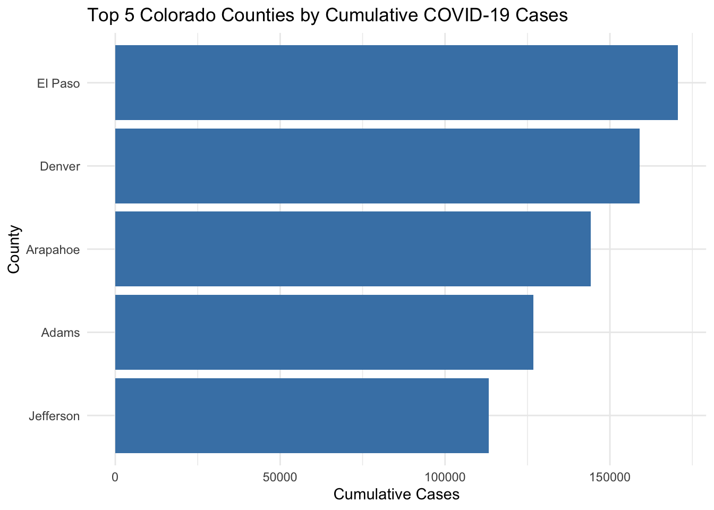
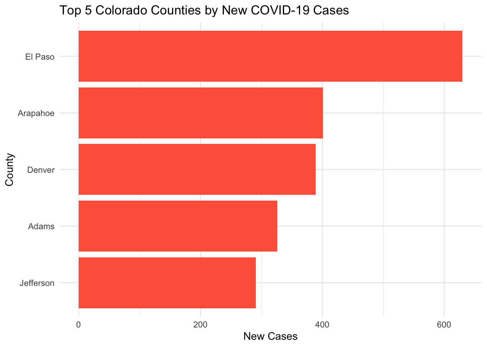
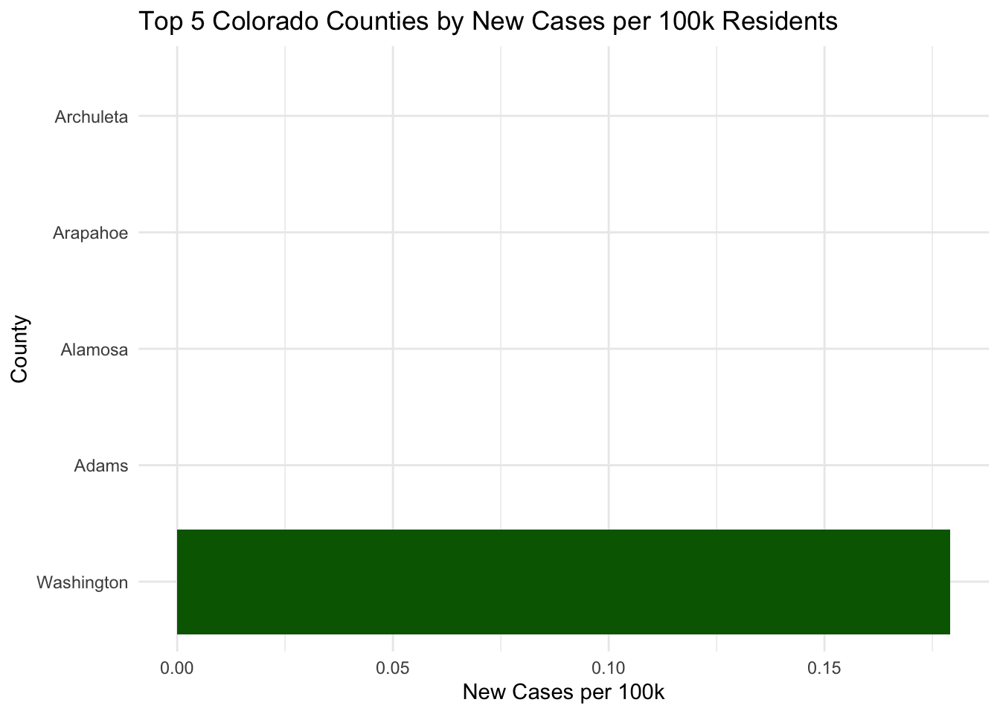
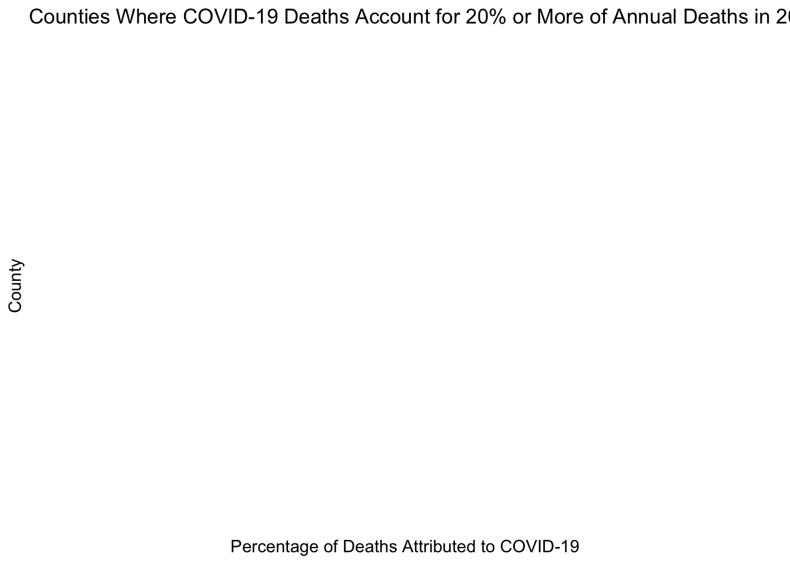
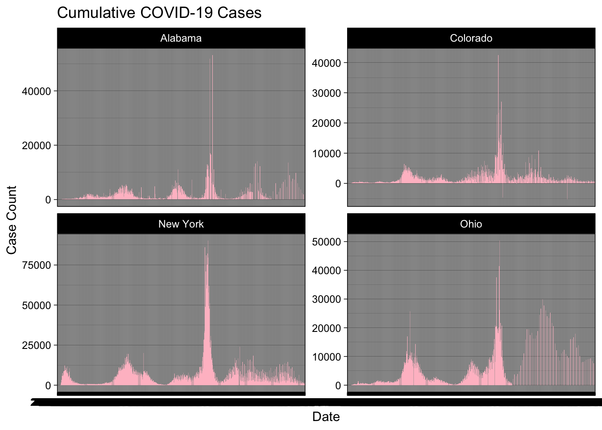

library(tidyverse)── Attaching core tidyverse packages ──────────────────────── tidyverse 2.0.0 ──
✔ dplyr 1.1.4 ✔ readr 2.1.5
✔ forcats 1.0.0 ✔ stringr 1.5.1
✔ ggplot2 3.5.1 ✔ tibble 3.2.1
✔ lubridate 1.9.4 ✔ tidyr 1.3.1
✔ purrr 1.0.2
── Conflicts ────────────────────────────────────────── tidyverse_conflicts() ──
✖ dplyr::filter() masks stats::filter()
✖ dplyr::lag() masks stats::lag()
ℹ Use the conflicted package (<http://conflicted.r-lib.org/>) to force all conflicts to become errorslibrary(flextable)
Attaching package: 'flextable'
The following object is masked from 'package:purrr':
composelibrary(zoo)
Attaching package: 'zoo'
The following objects are masked from 'package:base':
as.Date, as.Date.numericlibrary(lubridate)
# Read COVID-19 data from NYTimes
data <- read_csv('https://raw.githubusercontent.com/nytimes/covid-19-data/master/us-counties.csv')Rows: 2502832 Columns: 6
── Column specification ────────────────────────────────────────────────────────
Delimiter: ","
chr (3): county, state, fips
dbl (2): cases, deaths
date (1): date
ℹ Use `spec()` to retrieve the full column specification for this data.
ℹ Specify the column types or set `show_col_types = FALSE` to quiet this message.# Set parameters for Colorado and the date
my.date <- as.Date("2022-02-01")
my.state <- "Colorado"
# Filter data for Colorado and compute new cases and deaths
colorado_data <- data %>%
filter(state == my.state) %>%
group_by(county) %>%
arrange(date) %>%
mutate(
new_cases = cases - lag(cases, default = 0),
new_deaths = deaths - lag(deaths, default = 0)
) %>%
ungroup()
# Get the top 5 counties with the most cumulative cases on the specified date
top_cumulative_cases <- colorado_data %>%
filter(date == my.date) %>%
group_by(county) %>%
summarise(cumulative_cases = max(cases)) %>%
arrange(desc(cumulative_cases)) %>%
head(5)
# Display the top cumulative cases as a table
top_cumulative_cases %>%
flextable() %>%
compose(j = "county", value = as_paragraph(as_chunk(county))) %>%
compose(j = "cumulative_cases", value = as_paragraph(as_chunk(cumulative_cases)))county | cumulative_cases |
|---|---|
El Paso | 170,673.0 |
Denver | 159,022.0 |
Arapahoe | 144,255.0 |
Adams | 126,768.0 |
Jefferson | 113,240.0 |
# Plot the top counties by cumulative cases
ggplot(top_cumulative_cases, aes(x = reorder(county, cumulative_cases), y = cumulative_cases)) +
geom_bar(stat = "identity", fill = "steelblue") +
coord_flip() +
labs(title = "Top 5 Colorado Counties by Cumulative COVID-19 Cases",
x = "County",
y = "Cumulative Cases") +
theme_minimal()
# Get the top 5 counties with the most new cases on the specified date
top_new_cases <- colorado_data %>%
filter(date == my.date) %>%
group_by(county) %>%
summarise(new_cases = sum(new_cases, na.rm = FALSE)) %>%
arrange(desc(new_cases)) %>%
head(5)
# Display the top new cases as a table
top_new_cases %>%
flextable() %>%
compose(j = "county", value = as_paragraph(as_chunk(county))) %>%
compose(j = "new_cases", value = as_paragraph(as_chunk(new_cases)))county | new_cases |
|---|---|
El Paso | 630.0 |
Arapahoe | 401.0 |
Denver | 389.0 |
Adams | 326.0 |
Jefferson | 291.0 |
# Plot the top counties by new cases
ggplot(top_new_cases, aes(x = reorder(county, new_cases), y = new_cases)) +
geom_bar(stat = "identity", fill = "tomato") +
coord_flip() +
labs(title = "Top 5 Colorado Counties by New COVID-19 Cases",
x = "County",
y = "New Cases") +
theme_minimal()
# Population data URL
pop_url <- 'https://www2.census.gov/programs-surveys/popest/datasets/2020-2023/counties/totals/co-est2023-alldata.csv'
# Read in the population data
population_data <- read_csv(pop_url)Rows: 3195 Columns: 67
── Column specification ────────────────────────────────────────────────────────
Delimiter: ","
chr (5): SUMLEV, STATE, COUNTY, STNAME, CTYNAME
dbl (62): REGION, DIVISION, ESTIMATESBASE2020, POPESTIMATE2020, POPESTIMATE2...
ℹ Use `spec()` to retrieve the full column specification for this data.
ℹ Specify the column types or set `show_col_types = FALSE` to quiet this message.population_data <- read_csv(pop_url, show_col_types = FALSE)
# Modify population data to create FIP codes
population_data <- population_data %>%
mutate(
state_fip = str_pad(as.character(STATE), width = 2, side = "left", pad = "0"), # State FIP with 2 digits
county_fip = str_pad(as.character(COUNTY), width = 3, side = "left", pad = "0"), # County FIP with 3 digits
fip_code = paste0(state_fip, county_fip) # Create FIP code by combining state and county
)
# Check the result
head(population_data)# A tibble: 6 × 70
SUMLEV REGION DIVISION STATE COUNTY STNAME CTYNAME ESTIMATESBASE2020
<chr> <dbl> <dbl> <chr> <chr> <chr> <chr> <dbl>
1 040 3 6 01 000 Alabama Alabama 5024294
2 050 3 6 01 001 Alabama Autauga County 58809
3 050 3 6 01 003 Alabama Baldwin County 231768
4 050 3 6 01 005 Alabama Barbour County 25229
5 050 3 6 01 007 Alabama Bibb County 22301
6 050 3 6 01 009 Alabama Blount County 59130
# ℹ 62 more variables: POPESTIMATE2020 <dbl>, POPESTIMATE2021 <dbl>,
# POPESTIMATE2022 <dbl>, POPESTIMATE2023 <dbl>, NPOPCHG2020 <dbl>,
# NPOPCHG2021 <dbl>, NPOPCHG2022 <dbl>, NPOPCHG2023 <dbl>, BIRTHS2020 <dbl>,
# BIRTHS2021 <dbl>, BIRTHS2022 <dbl>, BIRTHS2023 <dbl>, DEATHS2020 <dbl>,
# DEATHS2021 <dbl>, DEATHS2022 <dbl>, DEATHS2023 <dbl>, NATURALCHG2020 <dbl>,
# NATURALCHG2021 <dbl>, NATURALCHG2022 <dbl>, NATURALCHG2023 <dbl>,
# INTERNATIONALMIG2020 <dbl>, INTERNATIONALMIG2021 <dbl>, …# Join the population data with COVID data
colorado_data_with_pop <- colorado_data %>%
left_join(population_data, by = c("county" = "CTYNAME"))
# Calculate per capita new cases and deaths
colorado_data_with_pop <- colorado_data_with_pop %>%
mutate(
new_cases_per_100k = (new_cases / POPESTIMATE2023) * 100000,
new_deaths_per_100k = (new_deaths / POPESTIMATE2023) * 100000
)
# Get the top 5 counties with the most new cases per capita
top_new_cases_per_capita <- colorado_data_with_pop %>%
filter(date == my.date) %>%
group_by(county) %>%
summarise(new_cases_per_100k = sum(new_cases_per_100k, na.rm = FALSE)) %>%
arrange(desc(new_cases_per_100k)) %>%
head(5)
# Display the top new cases per capita as a table
top_new_cases_per_capita %>%
flextable() %>%
compose(j = "county", value = as_paragraph(as_chunk(county))) %>%
compose(j = "new_cases_per_100k", value = as_paragraph(as_chunk(new_cases_per_100k)))county | new_cases_per_100k |
|---|---|
Washington | 0.2 |
Adams | |
Alamosa | |
Arapahoe | |
Archuleta |
# Filter out rows with missing or zero values in new_cases_per_100k
filtered_top_new_cases_per_capita <- top_new_cases_per_capita %>%
filter(!is.na(new_cases_per_100k) & new_cases_per_100k > 0)
# Plot the top counties by new cases per capita
ggplot(top_new_cases_per_capita, aes(x = reorder(county, new_cases_per_100k), y = new_cases_per_100k)) +
geom_bar(stat = "identity", fill = "darkgreen") +
coord_flip() +
labs(title = "Top 5 Colorado Counties by New Cases per 100k Residents",
x = "County",
y = "New Cases per 100k") +
theme_minimal() 
# Assume colorado_data already exists and has daily COVID deaths
colorado_data <- read_csv('https://raw.githubusercontent.com/nytimes/covid-19-data/master/us-counties.csv') %>%
filter(state == "Colorado") %>%
group_by(county) %>%
arrange(date) %>%
mutate(new_deaths = deaths - lag(deaths, default = 0)) %>%
ungroup()Rows: 2502832 Columns: 6
── Column specification ────────────────────────────────────────────────────────
Delimiter: ","
chr (3): county, state, fips
dbl (2): cases, deaths
date (1): date
ℹ Use `spec()` to retrieve the full column specification for this data.
ℹ Specify the column types or set `show_col_types = FALSE` to quiet this message.covid_deaths_2021 <- colorado_data %>%
filter(year(date) == 2021) %>%
group_by(county) %>%
summarise(covid_deaths_2021 = sum(new_deaths, na.rm = FALSE)) %>%
ungroup()
# Assuming population_data contains the total deaths for each county in 2021
population_data <- read_csv("https://www2.census.gov/programs-surveys/popest/datasets/2020-2023/counties/totals/co-est2023-alldata.csv") %>%
mutate(state_fip = str_pad(as.character(STATE), width = 2, side = "left", pad = "0"),
county_fip = str_pad(as.character(COUNTY), width = 3, side = "left", pad = "0"),
fip_code = paste0(state_fip, county_fip)) %>%
select(CTYNAME, POPESTIMATE2023, DEATHS2021) # Rows: 3195 Columns: 67
── Column specification ────────────────────────────────────────────────────────
Delimiter: ","
chr (5): SUMLEV, STATE, COUNTY, STNAME, CTYNAME
dbl (62): REGION, DIVISION, ESTIMATESBASE2020, POPESTIMATE2020, POPESTIMATE2...
ℹ Use `spec()` to retrieve the full column specification for this data.
ℹ Specify the column types or set `show_col_types = FALSE` to quiet this message.deaths_data <- covid_deaths_2021 %>%
left_join(population_data, by = c("county" = "CTYNAME")) %>%
mutate(covid_death_percentage = (covid_deaths_2021 / DEATHS2021) * 100)
counties_above_20_percent <- deaths_data %>%
filter(covid_death_percentage >= 20)
ggplot(counties_above_20_percent, aes(x = reorder(county, covid_death_percentage), y = covid_death_percentage)) +
geom_bar(stat = "identity", fill = "tomato") +
coord_flip() +
labs(title = "Counties Where COVID-19 Deaths Account for 20% or More of Annual Deaths in 2021",
x = "County", y = "Percentage of Deaths Attributed to COVID-19") +
theme_minimal() 
#in class practice
library(tidyverse)
library(zoo)
library(dplyr)
library(ggplot2)
# Load the dataset from your desktop
us_states_data <- read.csv("~/Desktop/us-states.csv")
# Summarize COVID-19 cases at the state level
state_covid <- us_states_data %>%
group_by(date, state) %>% # Group by the date and state
summarise(cases = sum(cases, na.rm = TRUE)) %>% # Sum total cases per state per day
filter(state %in% c('New York', 'Ohio', 'Colorado', 'Alabama')) %>% # Keep data for the specified states
group_by(state) %>% # Group by state for subsequent calculations
mutate(
newCases = cases - lag(cases), # Calculate new daily cases
roll = zoo::rollmean(newCases, k = 7, align = "right", fill = NA) # Calculate 7-day rolling average of new cases
) %>%
ungroup() # Remove grouping structure for further operations`summarise()` has grouped output by 'date'. You can override using the
`.groups` argument.# Plot the data
ggplot(state_covid, aes(x = date)) + # Initialize the ggplot with the date as x-axis
geom_col(aes(y = newCases), fill = "pink", col = NA) + # Bar chart for daily new cases
geom_line(aes(y = roll), col = "darkred", size = 1) + # Line plot for 7-day rolling average
theme_linedraw() + # Clean theme with simple black axis lines
facet_wrap(~state, nrow = 2, scales = "free_y") + # Facet by state, arrange in 2 rows
labs(
title = "Cumulative COVID-19 Cases", # Add a title to the plot
x = "Date", # Label for x-axis
y = "Case Count" # Label for y-axis
) `geom_line()`: Each group consists of only one observation.
ℹ Do you need to adjust the group aesthetic?
`geom_line()`: Each group consists of only one observation.
ℹ Do you need to adjust the group aesthetic?
`geom_line()`: Each group consists of only one observation.
ℹ Do you need to adjust the group aesthetic?
`geom_line()`: Each group consists of only one observation.
ℹ Do you need to adjust the group aesthetic?
# Question 7
# Load necessary libraries
library(tidyverse)
library(sf)Linking to GEOS 3.13.0, GDAL 3.8.5, PROJ 9.5.1; sf_use_s2() is TRUElibrary(ggplot2)
library(readr)